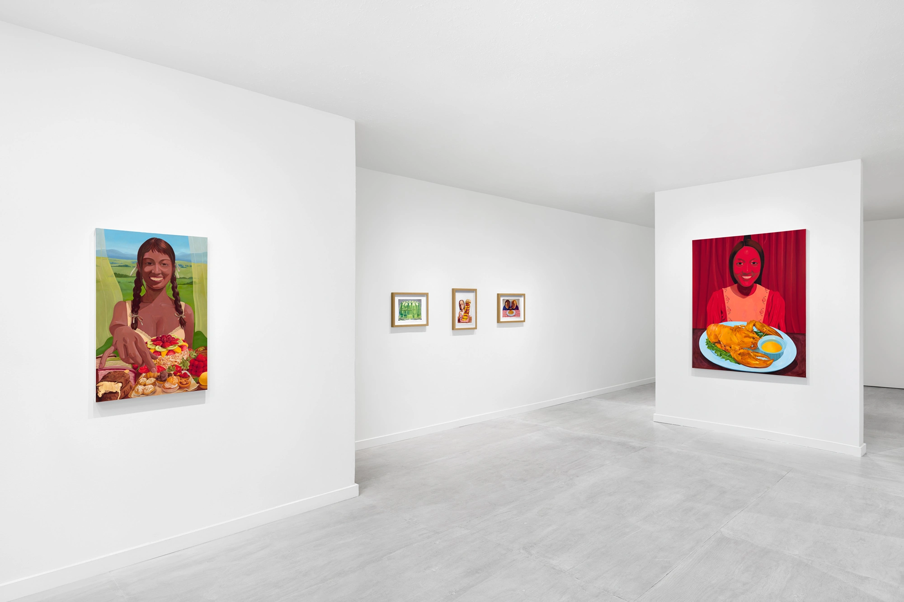
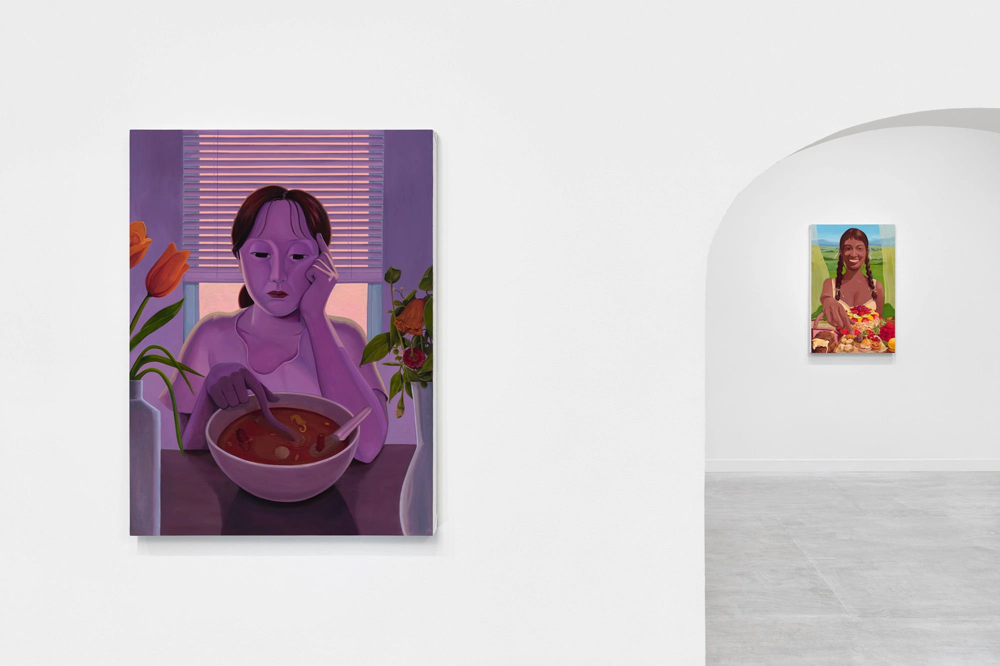
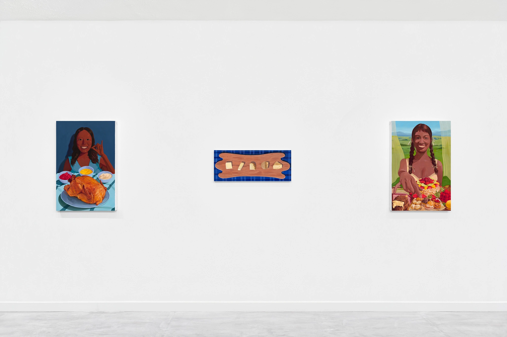
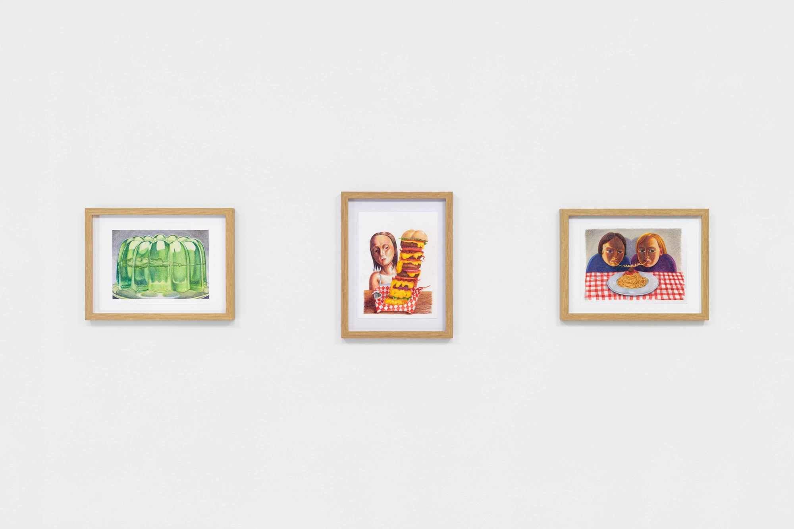
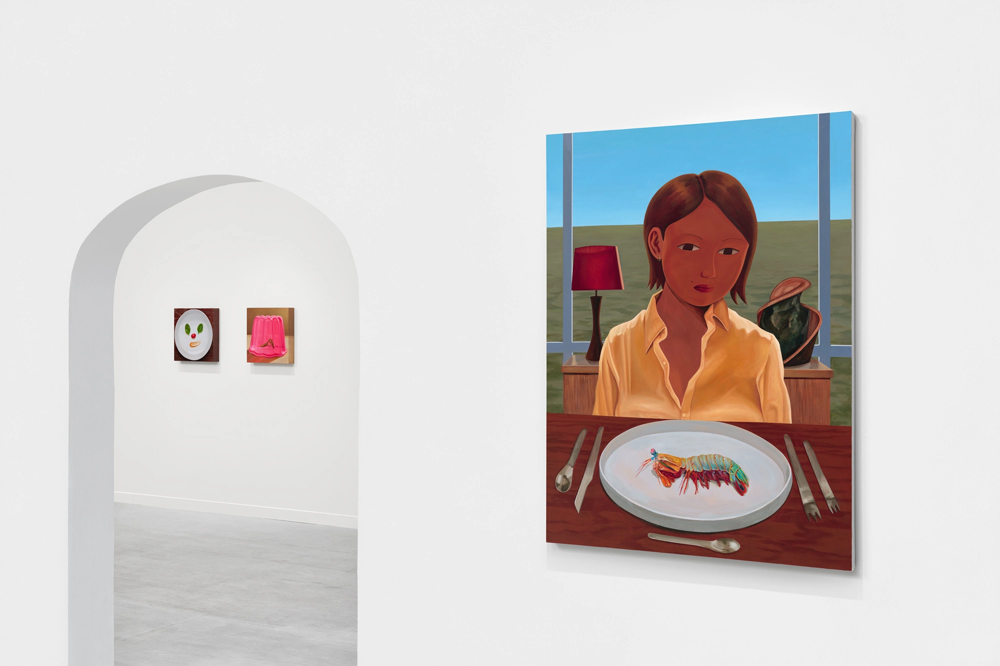
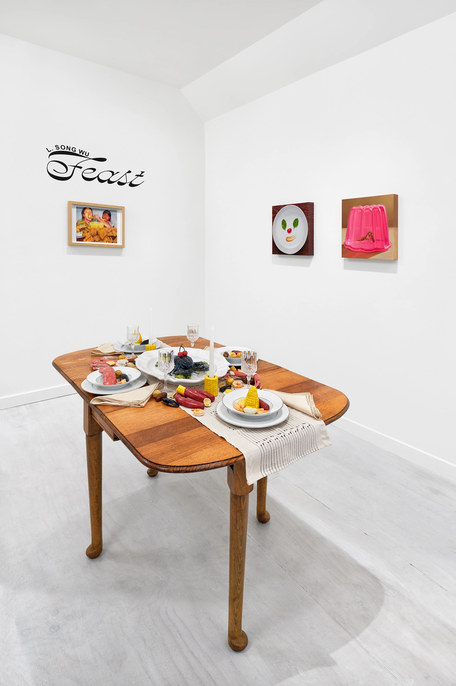
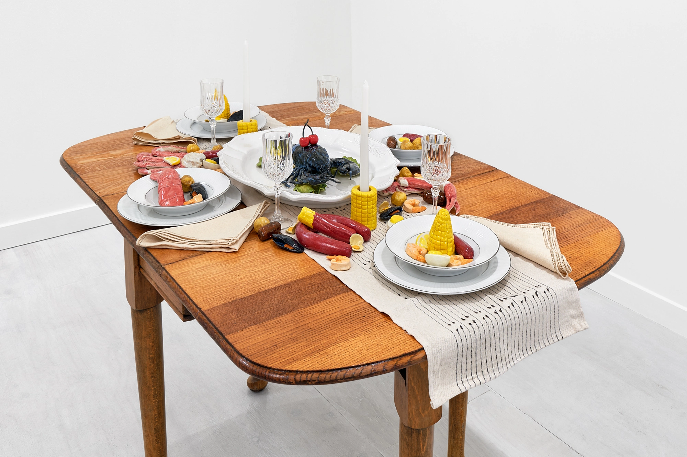

Feast is structured like an Italian full-course meal, unfolding in stages that explore the eroticism, performance, and violence behind acts of eating and consumption. Each painting resembles a thumbnail for a mukbang video, marked by surreal excess, seductive abundance, and intimate spectacle.
Food is arranged with deliberate absurdity, pulled from internet virality, childhood memory, and embodied fantasy, reflecting Wu's cross-cultural experiences across the U.S., China, and Italy, three places with deeply distinct but overlapping food traditions, aesthetics, and anxieties.


The exhibition presents a curated menu and dinner party of archetypes: dinner guests that range from the hyper-visible mukbanger, who performs impossible appetites while maintaining an impossibly thin body, to the fashionable modern woman, seated before a plate of rainbow mantis shrimp and armed with Arne Jacobsen silverware, yet looking disaffected, disconnected.
These characters are at once familiar and uncanny, their consumption deferred, withheld, and grotesquely on display.




Eating, in these works, becomes a fraught and complex act, both intimate and performative, pleasurable and punishing. Across the paintings, consumption is never neutral: it is a site of desire, excess, control, and projection.
Through hyper-aestheticized table settings and impossible quantities of food, Eating Show asks how what we consume, food, culture, and images, shapes identity.
Through the emotional distance of the figures, the series also ties appetite to broader questions of self-construction and external influence.
While inspired in part by the sensory overload of mukbang videos, with their exaggerated intimacy and spectacle, the paintings also echo more everyday rituals: the loneliness of solo dining, the choreography of a formal meal, or the pressure to eat "correctly" across cultures.
Drawing on Kyla Wazana Tompkins' notion of "indigestion" as a failure or refusal of incorporation, Wu asks what it means to consume, or to be consumed, in a world where appetites are always being shaped by race, gender, class, and the gaze of the viewer.
Ultimately, Feast stages a meal we cannot fully swallow. It seduces, repels, and leaves us hungry, for what, exactly, remains unsettled.
